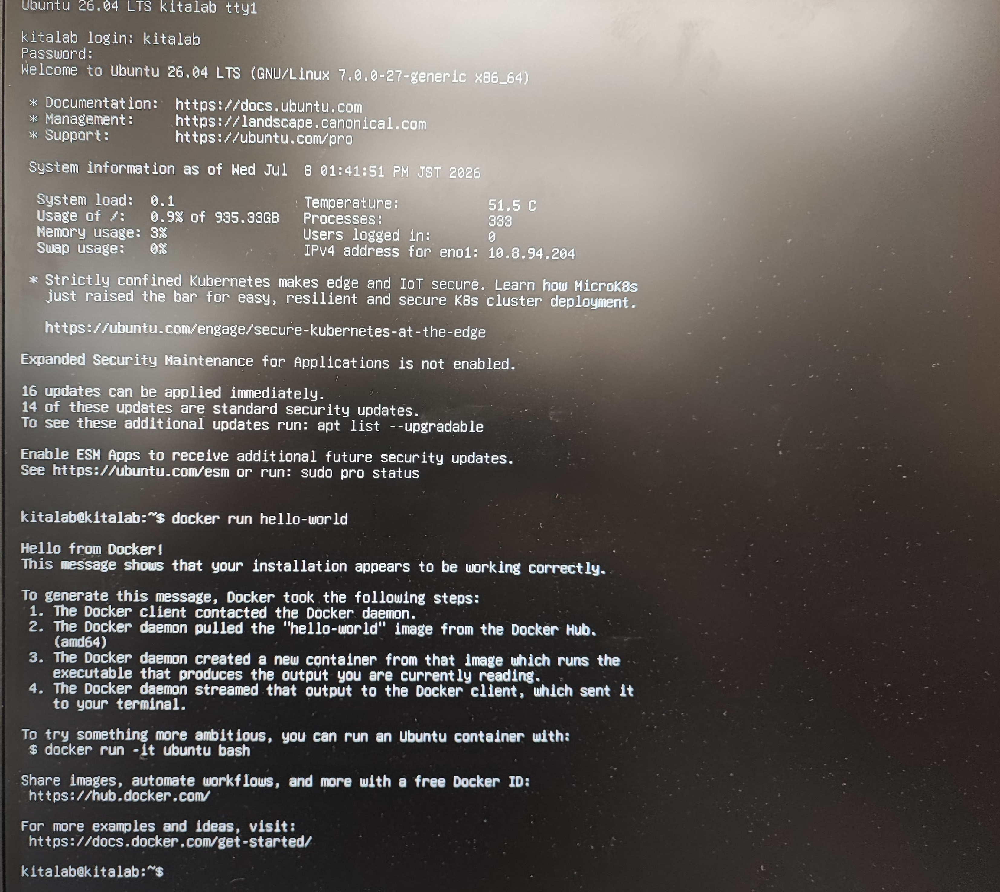

2026.07.08
研究経過報告書
研究テーマ
サーバー仮想化技術とコンテナ技術の性能比較および最適化に関する研究
進捗状況
時刻が直っていました。
論理ボリュームが120GBになっているので、total 1TB（957GB）に拡張しました。
sudo lvextend -l +100%FREE -r /dev/ubuntu-vg/ubuntu-lvqemu-kvmはパッケージ構成の整理により、QEMU本体がqemu-system-x86に統合されたため、qemu-system-x86に変更しました。
Dockerのインストールおよび動作確認を実施し、問題がないことを確認しました。[1]

検証データを共有するため、Git/GitHubの設定をしました。
ssh-keygen -t ed25519 -C your_email@example.com
cat ~/.ssh/id_ed25519.pubSSHキーをGitHubに追加しました。
git cloneできました。データ共有用のリポジトリ：
https://github.com/USlayout/Laboratory-Data-File
ベンチマークの自動化スクリプトを作成中です。
中間報告書を作成中です。
実験計画書を作成中です。
今後の計画
- ベンチマークを実行する環境を整える
- 測定結果を記録し、環境ごとの差を比較する
参考文献
研究経過報告書 · Gr03